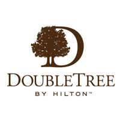

DoubleTree by Hilton Oradea este situat într-o zonă liniştită de pe malul râului Crişul Repede, la o distanţă de 5 minute cu maşina de centrul oraşului. Savuraţi o delicioasă prăjitură DoubleTree în momentul sosirii şi permiteţi personalului nostru să vă conducă în cameră sau în apartament.
Puteţi înota în piscina interioară a hotelului sau vă puteţi relaxa în jacuzzi. Aveţi la dispoziţie o sală de fitness cu o gamă completă de aparate cardio şi greutăţi. De asemenea, vă puteţi relaxa în centrul spa Eforea, unde veţi găsi mai multe săli de tratament şi relaxare. Nu pierdeţi contactul cu afacerea dvs. Profitaţi de centrul de business al hotelului, cu servicii de tipărire şi telefonie incluse.
- Toate unităţile de cazare de la Double Tree sunt spaţioase şi sunt dotate cu aer condiţionat, un televizor cu ecran plat şi o baie. Hotelul ispune de camere standard, deluxe cu balcon sau terasa si de (7) apartamente spatioase si luxoase.
- Wi-Fi este disponibil gratuit în incinta hotelului.
- Savurati bucataria mediteraneana a restaurantului Laurus in timp ce va bucurati de o piveliste minunata oferita de raul Crisul Repede
- Planificarea evenimentelor este una dintre activităţile la care ne pricepem cel mai bine la DoubleTree. Fie că invitaţi prieteni, colegi sau clienţi la un eveniment la DoubleTree, ne vom asigura că totul se va desfăşura perfect.
Aleea Ştrandului, Oradea, 410051, România
» Înapoi la informații hoteliere «